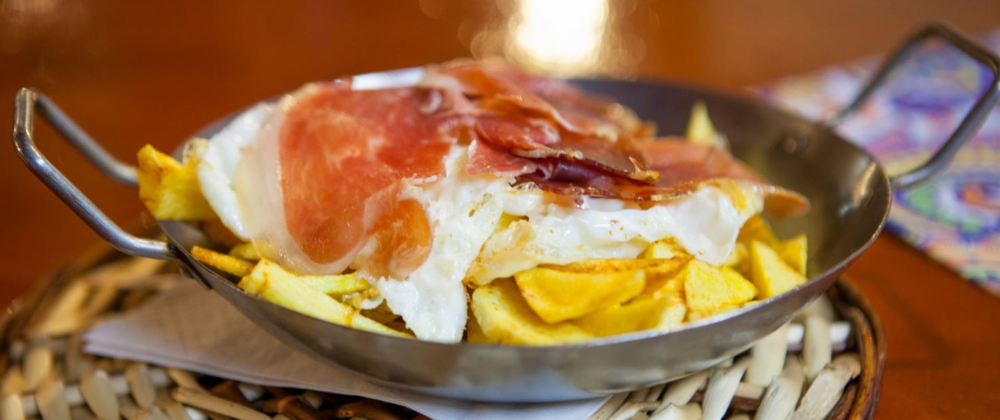
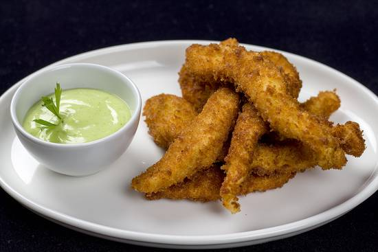

Entrantes
-
Huevos rotos con jamón
Deliciosos huevos con jamón, un clásico irresistible.
 -
Bravas con alioli
Patatas bravas con salsa alioli, sabrosas y picantes.
-
Nuggets
Crunchy nuggets, un placer para todos los gustos.
-
Pinchos de tortilla con jamón
Tentadores pinchos de tortilla con jamón, un clásico español.
-
Fingers con salsa de queso
Deliciosos fingers con salsa de queso, una explosión de sabor.

| Gluten (trigo, cebada, centeno) | Crustáceos (camarones, langostinos, cangrejos) | Pescado | Huevos | Cacahuetes | Soja | Leche (lactosa) | Frutos secos (almendras, nueces, avellanas) | Apio | Mostaza | Granos de sésamo | Dióxido de azufre y sulfitos (en concentraciones superiores a 10 mg/kg o 10 mg/l) | Altramuces | Moluscos (ostras, mejillones, calamares) | |
|---|---|---|---|---|---|---|---|---|---|---|---|---|---|---|
| imagen |  |
 |
 |
 |
 |
 |
||||||||
| alergeno | Gluten (trigo, cebada, centeno) | Crustáceos (camarones, langostinos, cangrejos) | Pescado | Huevos | Cacahuetes | Soja | Leche (lactosa) | Frutos secos (almendras, nueces, avellanas) | Apio | Mostaza | Granos de sésamo | Dióxido de azufre y sulfitos (en concentraciones superiores a 10 mg/kg o 10 mg/l) | Altramuces | Moluscos (ostras, mejillones, calamares) |